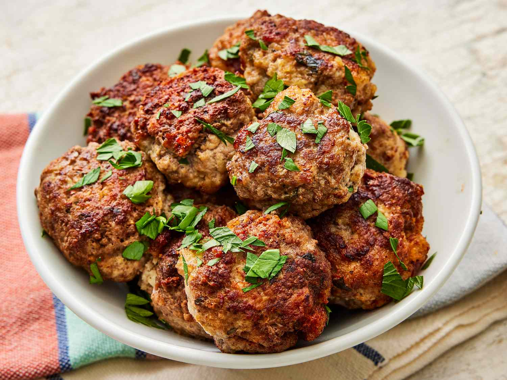

Meatballs

Description
Tasty meatballs in spicy brown sauce.
Ingredients
- 1 pound ground beef
- ½ pound ground veal
- ½ pound ground pork
- 1 cup freshly grated Romano cheese
- 2 eggs
- 2 cloves garlic, minced
- 1 ½ tablespoons chopped Italian flat leaf parsley
Steps
- Combine the first eight ingredients in a bowl.
- Add the bread crumbs and slowly add the water.
- Shape the mixture into meatballs.
- Fry the meatballs until they're all brown and crisp.